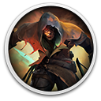

 Seven: Enhanced Edition
Detalhes
Descrição
Seven: The Days Long Gone is an open-world, isometric role-playing game, in which you play as Teriel, a master thief sent on a mission that will shake the foundations of the Vetrall Empire. Free roam across the vibrant prison island of Peh, and choose whether to help or exploit its many citizens.
If there’s one place that Master Thief Teriel avoids at all costs, it’s the prison island of Peh. But when a daring heist takes an unexpected turn, Teriel finds himself shackled on an airship bound for the infamous island. To make matters worse, the daemon inside his head makes it very clear that the thief will never leave unless he does exactly what he’s told.
In Seven: The Days Long Gone you play as Teriel. You must use all of your cunning and clandestine skills to escape a web of deceit and betrayal, and ultimately survive Peh.
EXPLORE A VIBRANT OPEN WORLD FROM AN ISOMETRIC PERSPECTIVE
From the moment you set foot on Peh, the island is open to you. Sneak, run, climb, and fight your way across a colourful array of environments. You are free to explore wherever you please; only security checkpoints, monster-infested areas, and dangerous factions stand in your way!
CHOOSE YOUR PLAYSTYLE
As a master thief, Teriel is well versed in the art of stealth. Get the jump on enemies from behind and above, fool everyone with cunning disguises, or just use the environment to keep out of sight entirely. If things go wrong, however, or you’re feeling impatient, there’s nothing to stop you from letting loose with an array of devastating weapons, and unleashing deadly magical skills upon your foes.
ENCOUNTER A MYRIAD OF COLOURFUL CHARACTERS
Encounter an array of people, from despondent slaves and prisoners through to rich socialites. Just be sure to keep an eye out for the two major factions on Peh: the Biomancers and the Technomagi. In such a desperate place, there are many who will take any help they can get. Choose whether to help or exploit Peh’s inhabitants, but be prepared for the consequences.
UNCOVER AN EPIC STORY OF DECEIT AND TREACHERY
On Peh, everyone has an agenda, and often there’s more than meets the eye. Dive into a world teeming with distrust, and crushed between the machinations of mighty powers. Work with the daemon that has possessed you to complete a mission of utmost importance. The fate of the Vetrall Empire rests in your hands.